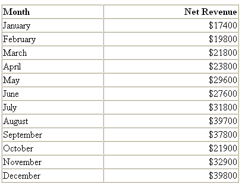
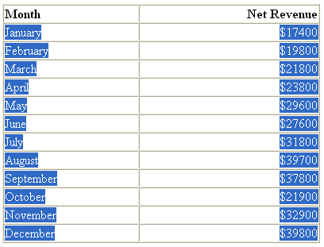
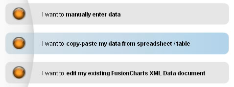
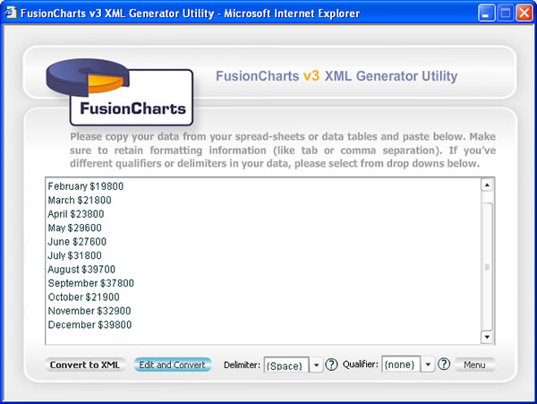
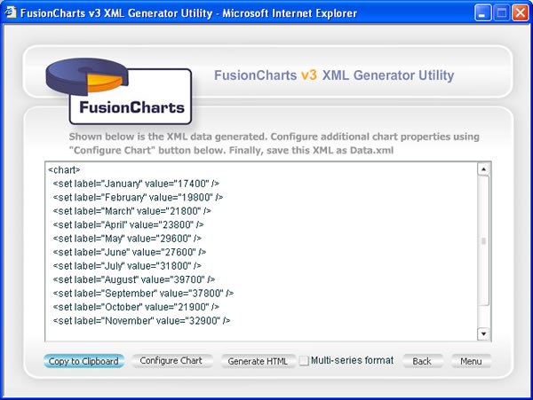
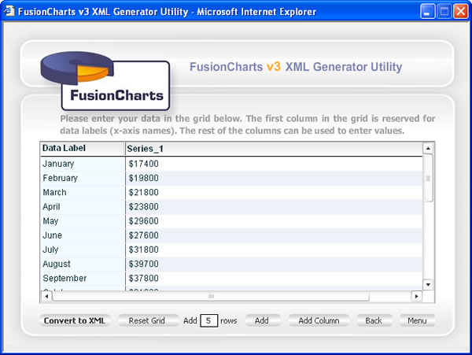

| Plotting charts from data in HTML Tables |
If you've your data in boring HTML tables, you can quickly and easily spice them up with charts, at just the click of few buttons. Here, we'll show you how. The XML Generator Utility allows you to copy data from HTML tables and convert it into XML too. Let's quickly see an example. We'll again get back to our Monthly sales summary example. Let's consider that we've this display present as an HTML table and we now need to convert it to a chart. |
|  |
Shown above is out table in HTML format. To convert this data into XML, you'll first need to copy paste this data into XML Generator Utility. Copy only the required data rows (and not the header) as under: |
|  |
Now, we need to paste this data in our XML Generator Utility. Launch the XML Generator utility and select the second option "I want to copy/paste my data from spreadsheet / table". |
|  |
In the text area that you now get, paste the data that's in your clipboard. It should look as under: |
|  |
Now, select Space as the delimiter, as the data is now separated using space instead of Tabs. To know what the delimiter is, you can first paste the data in some text editor (like Notepad, Textpad etc.) and then see the character separating two data items on the same row. You can easily recognize the delimiter character from the text editor. Also, if you've trailing spaces at the end of each data row, you might have to manually remove them. Now, you've two options to convert it into XML:
To choose option 1, click on "Convert to XML" button. You'll instantly get the XML as under: |
|  |
You can now configure the chart properties or generate HTML from here as explained in earlier sections. Going back to previous step, if you had wished to edit the data before conversion, you can click on "Edit and Convert" button. This lets you edit your data in a grid as under: |
|  |
| After editing your data, you can now click on "Convert to XML" button to generate the XML and finally chart. |